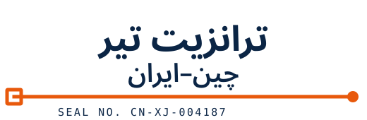

انتخاب انبار تجمیع در چین
ایوو، شنژن، گوانگجو و شانگهای. هنگام استعلام، انبار مبدأ را مشخص کنید.

WhatsAppTIR TRUCK · CHINA → IRAN
کامیون TIR برای حمل دربست و خردهبار از چین به ایران. بار شما در ایوو، شنژن، گوانگجو یا شانگهای تجمیع میشود و از مرز ووچیا یا خورگوس به گمرک غرب تهران، بندر خشک آپرین یا گمرک مشهد میرسد.
برای مسیر داخلی از انبار چین تا ووچیا، حدود ۷ روز جداگانه در نظر بگیرید.
در مسیر ووچیا میتوانید برای سرویس مستقیم یا تعویضی استعلام بگیرید. زمان حمل هر مقصد در جدول آمده است.
سرویس مستقیم: یکبار تعویض کامیون در بخارا.
سرویس تعویضی: تعویض کامیون در اوش و بخارا؛ برای برخی محمولهها، یک تعویض دیگر در مرز ایران انجام میشود.
| مقصد | سرویس مستقیم | سرویس تعویضی |
|---|---|---|
| مشهد | ۱۸ تا ۲۱ روز | ۲۴ تا ۲۸ روز |
| تهران | ۲۱ تا ۲۳ روز | ۲۶ تا ۳۰ روز |
مبدأ محاسبه زمانهای جدول، مرز ووچیا است. مسیر داخلی چین حدود ۷ روز جداگانه محاسبه میشود. این بازهها مربوط به شرایط فعلی تردد هستند، با وضعیت مرزها تغییر میکنند و تعهد قطعی زمان تحویل محسوب نمیشوند.
تریلی چادری ۱۳٫۶ متری با سقف ۹۶ مترمکعب و ۲۵ تن برای هر خودرو. هر دو محدودیت حجم و وزن همزمان اعمال میشوند. حمل دربست و خردهبار پذیرفته میشود؛ حداقل خردهبار ۱ مترمکعب یا ۱۰۰ کیلوگرم است. بخش مازاد بر ظرفیت هر خودرو جداگانه قیمتگذاری میشود.
برای این گروههای کالا میتوانید استعلام بفرستید:
بر اساس مشخصات کالا و مسیر شما، برنامه حمل و کرایه اعلام میکنیم.
بار به گمرک مشهد، گمرک غرب تهران یا بندر خشک آپرین میرسد. تحویل با شرایط CPT / DAP در محوطه گمرکی انجام میشود؛ هماهنگی ترخیص وارداتی و پرداخت حقوق و عوارض بر عهده خریدار است.
برای برنامهریزی حمل، انبار مبدأ، گمرک مقصد و حجم بار را مشخص کنید. این راهنماها به آمادهسازی اطلاعات کمک میکنند.
ایوو، شنژن، گوانگجو و شانگهای. هنگام استعلام، انبار مبدأ را مشخص کنید.
در مسیر ووچیا میتوانید برای سرویس مستقیم یا تعویضی استعلام بگیرید. زمان حمل هر مقصد در جدول آمده است.
سرویس مستقیم: یکبار تعویض کامیون در بخارا. سرویس تعویضی: تعویض کامیون در اوش و بخارا؛ برای برخی محمولهها، یک تعویض دیگر در مرز ایران انجام میشود.
انبار مبدأ، گمرک مقصد و مشخصات کالا را ارسال کنید. زمان حمل و برنامه تعویض کامیون مورد به مورد اعلام میشود.
تریلی چادری ۱۳٫۶ متری با سقف ۹۶ مترمکعب و ۲۵ تن برای هر خودرو. هر دو محدودیت حجم و وزن همزمان اعمال میشوند. حمل دربست و خردهبار پذیرفته میشود؛ حداقل خردهبار ۱ مترمکعب یا ۱۰۰ کیلوگرم است. بخش مازاد بر ظرفیت هر خودرو جداگانه قیمتگذاری میشود.
نام کالا، کد HS، وزن ناخالص و حجم. برای ماشینآلات، ابعاد و برای مواد شیمیایی، برگه MSDS را هم ارسال کنید.